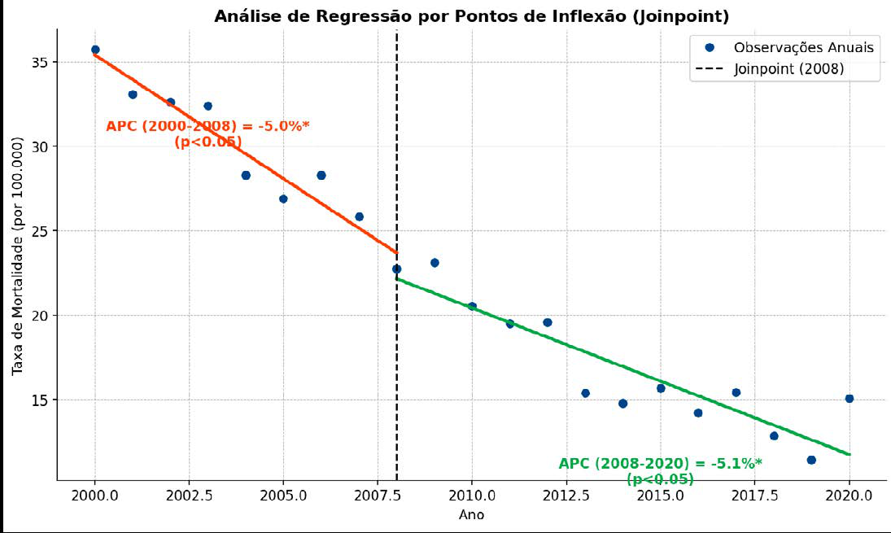

Módulo 2 | Aula 3
Análise de Série Histórica - Prática com Excel e Joinpoint
Análise de Tendência com Joinpoint (Exemplo Teórico)
O Joinpoint é um software estatístico desenvolvido pelo National Cancer Institute (NCI), nos Estados Unidos, e amplamente utilizado para analisar tendências temporais em dados de saúde, como taxas de mortalidade e incidência. A análise de regressão joinpoint (pontos de inflexão) descreve as alterações em tendências de dados, identificando os pontos no tempo em que ocorrem mudanças significativas. O método ajusta o modelo de regressão mais simples que os dados permitem, testando se múltiplos segmentos de reta são estatisticamente melhores para descrever a série do que uma única reta (NATIONAL CANCER INSTITUTE, 2026) (BRITO et al., 2016).
Conceitos-Chave do Joinpoint
É um ponto no tempo (um ano) onde a tendência sofre uma mudança significativa, isto é, são os pontos onde a inclinação da linha de tendência muda.
É a variação percentual anual para cada segmento de reta identificado entre os joinpoints. Mede a velocidade da tendência em cada período, ou seja, o grau de subida ou descida em cada trecho.
É uma média ponderada dos APCs, resumindo a tendência ao longo de todo o período analisado.
Interpretando um Resultado do Joinpoint
Imagine que aplicamos a análise de Joinpoint aos nossos dados (dados_aula2_3.xls). O software poderia identificar que a queda na mortalidade não foi constante. Ele poderia, por exemplo, encontrar um joinpoint em 2008, como na Figura 2.
Figura 2 – Simulação de um resultado da análise de regressão Joinpoint

Fonte: Elaborado pelo autor (2026).
A imagem mostra uma análise de tendências temporais utilizando regressão por pontos de inflexão (Joinpoint). Observações anuais de uma taxa de mortalidade (por 100.000 habitantes) entre 2000 e 2020 (pontos azuis).
Neste exemplo, a interpretação seria:
- Um ponto de inflexão foi identificado em 2008, dividindo a série em dois períodos com tendências distintas indicado pela linha vertical tracejada.
- De 2000 a 2008: Houve uma tendência de queda significativa, com uma Variação Percentual Anual (APC) de -5,0% ao ano (linha laranja).
- De 2008 a 2020: A tendência de queda continuou, com um APC de -5,1% ao ano, embora com uma inclinação ligeiramente diferente (linha verde).
Por este método conseguimos avaliar que:
- Houve redução contínua da taxa de mortalidade entre 2000 e 2020.
- O modelo Joinpoint detectou uma mudança significativa em 2008, separando o período em duas fases de declínio.
- Apesar da mudança formal detectada, a velocidade de queda é muito similar antes e depois de 2008.
- Ambos os segmentos têm significância estatística, reforçando que a tendência de queda é robusta.
Esta análise, mais detalhada, permite entender nuances que a análise linear única do Excel não captura. Ela mostra não apenas se a tendência mudou, mas também quando e com que intensidade.
Se você deseja se aprofundar no uso do Joinpoint, conhecer exemplos de análises, consultar a documentação completa ou baixar o software, o Instituto Nacional do Câncer dos Estados Unidos mantém uma página oficial dedicada ao programa. O site apresenta tudo o que você precisa: descrição detalhada do método, materiais de apoio, exemplos práticos, versões atualizadas do software e instruções de instalação. Acesse: https://surveillance.cancer.gov/joinpoint/